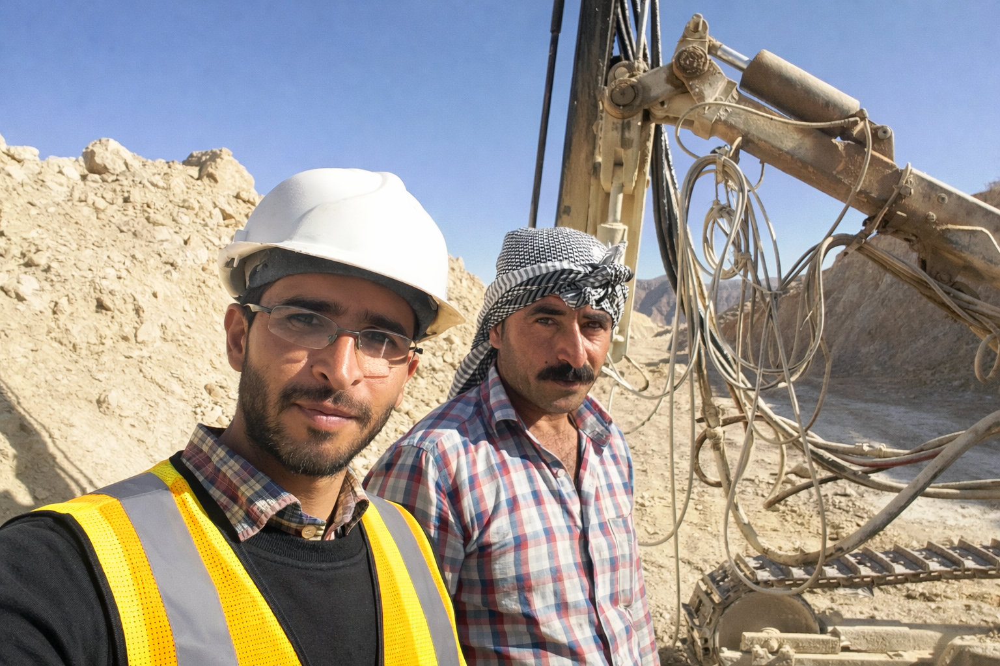

Überwachung und Steuerung des Bohrteams vor Ort
Direkte Überwachung der Bohrarbeiten und der Leistung der Mitarbeiter vor Ort, einschließlich der operativen Steuerung, der Abstimmung mit dem Baustellenteam sowie der Überprüfung der Ausführungsqualität unter anspruchsvollen Bedingungen vor Ort.